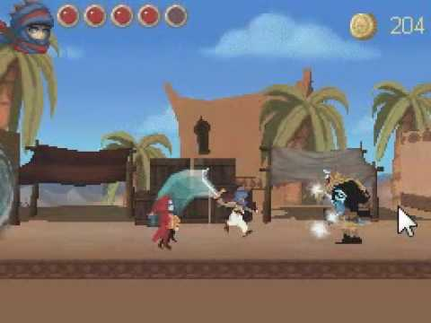

Prince of Persia: The Fallen King is a third-person action-adventure
video game developed and published by Ubisoft.[1] The game was released
for the Nintendo DS in December 2008, as a spin-off of Prince of Persia.
The plot, taking place in ancient Persia, concerns the player character's
role in a celestial battle between two gods; Ahriman and Ormazd. The player
assumes the role of the Prince, and Zal, fighting Ahriman's forces with a
variety of different physical and magical attacks. Prince of Persia: The Fallen
King has received mixed reviews, with the most agreed-upon problem being the control scheme.
The main objective of the game is to collect four pieces to a magical seal which
will banish the evil god Ahriman from the region. The Nintendo
DS stylus is used to maneuver the Prince by touching the touchscreen.
The stylus is used to move the Prince, to do acrobatic moves, in combat,
and to use Zal's magic. As the Prince and Zal progress in their adventure,
Zal becomes Corrupted at certain points, in which the Prince has to pursue
and defeat him. Sometimes, after being defeated, Zal gains new powers. These powers
allow him and the Prince to perform gradually more advanced platforming maneuvers.